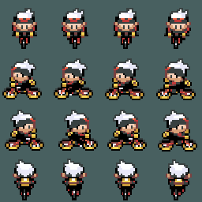

Amazon Web Services & CloudFlare
Posted on 01 June 2016
Aujourd'hui, petit billet en français pour partager une méthode fort pratique et abordable pour mettre en ligne des sites statiques avec Amazon Web Services (AWS) et CloudFlare.
Petit lancé de fleurs vers le brilliant Frédéric Bournival, qui m'a guidé étape par étape au travers de ce processus.
Nom de domaine
Prenons pour acquis que vous êtes déjà le fier propriétaire d'un nom de domaine chez un registrar. Si ce n'est pas le cas, ahbincoudon.cc est disponible.
AWS (_ah-double-vé-ess_)
Ensuite, pour entamer le processus, il faut un compte AWS.
AWS offre ses services S3 d'espace infonuagique gratuitement* pendant 12 mois sous le nom Free Tier. Deal.
*Quelques limites s'imposent :
* 5GB de _Standard Storage_
* 20,000 requêtes _Get_
* 2,000 requêtes _Put_
S3, c'est leur service de stockage. On crée des buckets pour stocker et récupérer des objets dans le nuage.
Buckets
1. https://console.aws.amazon.com/console/home?region=us-east-1
2. Sélectionner *S3*
3. *Simple Storage Service*
Il nous faut donc créer deux buckets S3 -- un pour notre domaine et l'autre pour la redirection www -- dans la region la plus proche
N. Virginia, pour moi, n'est qu'à une distance négligeable de 1,149km. Par contre, une erreur de parcours a eu pour conséquence que ce site est situé en Caroline du Nord.
claudinebroke.it
www.claudinebroke.it
Ensuite, il faut sélectionner le premier bucket (claudinebroke.it) pour éditer ses properties. Sélectionnez Static website hosting et Enable website hosting. Ensuite, il faut lui attribuer des permissions. Dans Bucket Policy :
{
"Version": "2012-10-17",
"Statement": [
{
"Sid": "PublicReadForGetBucketObjects",
"Effect": "Allow",
"Principal": "*",
"Action": "s3:GetObject",
"Resource": "arn:aws:s3:::claudinebroke.it/*"
}
]
}
Pour le bucket www, sélectionnez Redirect all requests to another host name. Merci bonsoir.
Vous pouvez dès lors accéder à votre site! E.g.
http://claudinebroke.it.s3-website-us-west-1.amazonaws.com/
SYNC avec AWSCLI
Prochaine étape : syncer son contenu avec AWS. Depuis Ubuntu, on peut installer le package management system python-pip, qui nous permet d'installer awscli : un outil de gestion en ligne de commande pour AWS (documentation).
sudo apt-get update
sudo apt-get -y install python-pip
pip install awscli
Dans mon cas, j'ai intégré les commandes dans mon script de automated provisioning de Vagrant.
Ensuite, il vous faut créer un utilisateur et lui attribuer une key-pair.
Depuis la console Web d'AWS, cliquez sur IAM - Identity & Access Management
Créez un utilisateur. E.g. s3bucketsync, et laissez le système générer la valeur key-pair. Sauvegardez le access key et sélectionnez l'utilisateur nouvellement créé.
Dans permission :
attach policy
Filtrez pour s3 et sélectionner :
AmazonS3FullAccess
Maintenant, de retour dans notre environnement Linux, on peut configurer l'outil AWSCLI.
aws configure
AWS Access Key ID [None]: YOURSECRETID
AWS Secret Access Key [None]: YOURSECRETKEY
Default region name [None]: us-east-1
Default output format [None]: json
Ensuite, vous n'avez qu'à naviguer jusqu'au dossier que vous désirez envoyer dans les nuages et rouler cette commande :
aws s3 sync . s3://claudinebroke.it --region us-west-1
Mes buckets ayant voyager un peu, le paramètre facultatif --region est utilisé pour outrepasser l'option Default region name désignée auparavant avec l'outil AWSCLI.
CloudFlare
Maintenant, http://claudinebroke.it.s3-website-us-west-1.amazonaws.com/, comme addresse Web, c'est pas simple simple à partager à vive voix dans un pub bruyant quand tu veux que tes amis ailles voir ton dernier billet de blog. Bref, il nous faut un alias, colloquialement appelé du CNAME Flattening, pour faire le pont entre notre addresse AWS et notre nom de domaine.
CloudFlare, c'est aussi une fantastique couche de sécurité et de cache pour votre site Web. Pis c'est gratuit, oui oui.
Créez-vous un compte CloudFlare, puis sélectionnez DNS. Vous aurez de besoin, au minimum, de deux entrées :
CNAME (i) *Flattening* | claudinebroke.it | is an alias of claudinebroke.it.s3-website-us-west-1.amazonaws.com | Automatic | *Petit nuage transpercé d'une flèche*
CNAME | www | is an alias of claudinebroke.it | Automatic | *Petit nuage transpercé d'une flèche*
CloudFlare vous attribue ensuite des nameservers. E.g.
sam.ns.cloudflare.com
eve.ns.cloudflare.com
La dernière étape consiste à retourner chez le registrar -- là où vous vous êtes procuré vos noms de domaines -- pour lier les nameservers aux noms de domaines.
Conclusion
Et c'est tout! claudinebroke.it affiche maintenant le contenu de claudinebroke.it.s3-website-us-west-1.amazonaws.com.
Ça peut prendre quelques temps pour que les DNS Records se rafraîchissent, par contre, donc profitez de cette petite pause et marquez l'occasion avec une bonne bière!
Favorite Pizza I
Posted on 09 May 2016
Blueberry, Ricotta, Feta and Honey-caramelized Onion Naan Pizza
Time: 1 hour
Makes: 4 individual pizzas
I know what you're thinking: "That recipe sounds weird" -- and you're right, it is. Thing is, I just spent the weekend solo and decided that that would be the perfect occasion to experiment a little and make a weird-yet-amazingly-delicious sweet-salty-spicy pizza. In fact, this recipe was so good that I just had to make it again the last night for my boyfriend to taste.
Dough
If you've never made dough, I highly suggest you try your hand at it; it's quite easy and rewarding! It requires very little effort and there's convenient waiting times that you can use to prep the toppings, drink beer and eat chips :)
- 1 tbs dry yeast
- 1 tbs sugar
- 1 tsp salt
- 125ml lukewarm water
- 2 cups non-bleached flour
- 1 tbs olive oil
Pizza Toppings
- 1/2 cup ricotta cheese
- 1/2 cup feta cheese, finely crumbled
- 1 cup frozen blueberries
- 1 tsp honey
- 1 tsp red pepper flakes
- 1 red onion, thinly sliced
- 1 tsp olive oil
- pinch of salt
Preparation
Get the water to about 37 degrees celsius. Conveniently, this is approximately the same temperature as your body's! So you can get a close-enough temperature straight from the tap by wetting your finger, dropping it under your tongue, adjusting the tap temperature and repeating the operation until the water feels neither too hot or too cold under the tongue. Once satisfying, pour 125ml into a large bowl. Stir in yeast and sugar and set aside for 15 minutes**.
Once the yeast has been activated, stir in oil, salt and flour. Mix using hands once it becomes too hard. The resulting ball of dough should be sticky, and you can add flour and/or water to the mix if the texture isn't satisfactory. Wait 15 minutes. Knead the dough 20 times and separate into 4 equal-sized balls. On a lightly floured surface, use a rolling pin to get the balls to approximately the surface size of your frying pan. Set aside.
Pre-heat oven to 400°F.
Slice onion. Heat oil on low-heat in non-stick frying pan and add onion, red pepper flakes. Cook until onions are translucent. Add honey and fry another few minutes until onions are caramelized and fragrant. Remove onions from pan, and add start frying, one by one, the pizza doughs. Flip when each side is golden and crispy.
Once the pizza doughs are ready, place them on baking sheets. Spread the ricotta over the doughs, and add feta, caramelized onions, and blueberries on top.
Bake for about 10 minutes or until the dough is crispy and the toppings are hot. Sprinkle some salt on top before serving.
** Note that if after 15 minutes the yeast mixture hasn't "foamed" then you should just throw out the mixture and try again; that happens when the water is too warm, too cold, or if the yeast is too old.
Beer: Houblon Noir, a Black IPA from Brasseurs du Monde
Petit Workout - The Application
Posted on 08 May 2016

Our petit workout application is finally taking shape! We can now start our workouts and see the elapsed time... which means that all we have currently is no better than a timer!
In this article, we'll enhance the application with a way to visualize the interval's intensity, the remaining time for the current interval, and we'll add a little sprite animation for some visual appeal.
Main Class
public class WorkoutQueueTest extends Application {
private Label timerLabel = new Label("00:00:00");
private Label countdownLabel = new Label("00:00:00");
private Label intensityLabel = new Label("Easy");
private Sprite spriteAnimation;
public static void main(String[] args) throws Exception
{
launch(args);
}
@Override
public void start(Stage primaryStage) throws Exception
{
primaryStage.setTitle("Petit Workout");
final ImageView imageView = new ImageView(
new Image("file:" + this.getClass().getResource("/SpriteSheet.png").getPath())
);
imageView.setViewport(new Rectangle2D(0, 68, 64, 64));
spriteAnimation = new Sprite(imageView, 4, 4, 0, 68, 64, 64);
spriteAnimation.setCycles(Duration.millis(1000));
final Button startBtn = new Button("Start");
startBtn.setOnAction((e) -> startWorkout());
BorderPane pane = new BorderPane();
pane.setTop(startBtn);
pane.setBottom(timerLabel);
pane.setRight(countdownLabel);
StackPane centerPane = new StackPane();
centerPane.getChildren().addAll(intensityLabel, imageView);
pane.setCenter(centerPane);
primaryStage.setScene(new Scene(pane, 300, 250));
primaryStage.show();
}
public void startWorkout()
{
Queue queue = new Queue();
spriteAnimation.play();
(new EventsPerFrame(queue, timerLabel, countdownLabel, intensityLabel)).start();
Producer producer = new Producer(queue);
new Thread(producer).start();
Consumer consumer = new Consumer(queue);
new Thread(consumer).start();
}
}
As you can see, a few things were added to the main classe's start method. The ImageView loads our sprite sheet image, and the SpriteAnimation class handles animating it. We also added label elements, which are updated on every frame using the EventsPerFrame method that extends the javafx.animation.AnimationTimer class.
Labels
private Label timerLabel = new Label("00:00:00");
private Label countdownLabel = new Label("00:00:00");
private Label intensityLabel = new Label("Easy");
The main class is then only in charge of placing the elements within the application window:
final Button startBtn = new Button("Start");
startBtn.setOnAction((e) -> startWorkout());
BorderPane pane = new BorderPane();
pane.setTop(startBtn);
pane.setBottom(timerLabel);
pane.setRight(countdownLabel);
StackPane centerPane = new StackPane();
centerPane.getChildren().addAll(intensityLabel, imageView);
pane.setCenter(centerPane);
Note that the intensityLabel shares a BorderPane pane with the imageView object. Using the StackPane layout, or any other layouts, we can easily add multiple elements unto a single pane.
In the previous blog post, we used the AnimationTimer method to fire events on each frame. To better handle the extra logic behind our extra labels, the EventsPerFrame method was created to extend on the AnimationTimer and handle the labels' state on every frame change.
(new EventsPerFrame(queue, timerLabel, countdownLabel, intensityLabel)).start();
Now let's look at the class in detail:
public class EventsPerFrame extends javafx.animation.AnimationTimer
{
long startTime = System.nanoTime();
int stopwatch = 0;
Interval intervalInProgress;
private Queue queue;
private Label timerLabel;
private Label countdownLabel;
private Label intensityLabel;
public EventsPerFrame(
Queue queue,
Label timerLabel,
Label countdownLabel,
Label intensityLabel
) {
this.queue = queue;
this.timerLabel = timerLabel;
this.countdownLabel = countdownLabel;
this.intensityLabel = intensityLabel;
}
@Override
public void handle(long now)
{
Interval interval;
try {
interval = queue.element();
} catch (java.lang.NullPointerException e) {
return;
}
if (interval == null) {
return;
}
int elapsedTime = toIntExact((now - startTime) / 1000000000);
timerLabel.setText(ReadableTimeConverter.convert(elapsedTime));
countdownLabel.setText(ReadableTimeConverter.convert(stopwatch - elapsedTime));
intensityLabel.setText(interval.getIntensity());
if (intervalStillInProgress(interval)) {
return;
}
intervalInProgress = interval;
stopwatch = toIntExact(elapsedTime + interval.getDuration());
}
private boolean intervalStillInProgress(Interval interval) {
return intervalInProgress == interval;
}
}
public class ReadableTimeConverter {
/**
* @param seconds
* @return String
*/
public static String convert(int seconds)
{
int hr = seconds / 3600;
int rem = seconds % 3600;
int mn = rem / 60;
int sec = rem % 60;
return (hr < 10 ? "0" : "") + hr + ":" + (mn < 10 ? "0" : "") + mn + ":" + (sec < 10 ? "0" : "") + sec;
}
}
It may look complicated, but its quite simple; we always increment the elapsedTime, always decrement the stowatch, and always update the intensityLabel with the value we get from the current Interval object being processed. The only complicated bit is that we need to "refill" the stopwatch with the interval's duration whenever we detect that the queue has picked up a new interval.
ImageView
Now back on the main class, we added an ImageView, which is sent to a Sprite class.
From the Java documentation:
"The ImageView is a Node used for painting images loaded with Image class."
In other words, the Image view, using the setViewport method, permits the "clipping" of an image, i.e. removing and adding pixels to an image's "visible area"
final ImageView imageView = new ImageView(
new Image("file:" + this.getClass().getResource("/SpriteSheet.png").getPath())
);
imageView.setViewport(new Rectangle2D(0, 68, 64, 64));
spriteAnimation = new Sprite(imageView, 4, 4, 0, 68, 64, 64);
Note that since the image is a local resource file, we append file: to the path.
The Sprite class is where the animation happens. Simply put, our viewport has a set width and height, that "frames" our SpriteSheet. On every new frame animation we move the SpriteSheet horizontally and this, until we reach the end of the SpriteSheet where we start again. This is the same concept used with traditional film, so the logic is quite simple to grasp.
public class Sprite extends Transition {
private final ImageView imageView;
private final int frameCount;
private final int columns;
private final int offsetX;
private final int offsetY;
private final int width;
private final int height;
private int lastIndex;
public Sprite(
ImageView imageView,
int frameCount,
int columns,
int offsetX,
int offsetY,
int width,
int height
) {
this.imageView = imageView;
this.frameCount = frameCount;
this.columns = columns;
this.offsetX = offsetX;
this.offsetY = offsetY;
this.width = width;
this.height = height;
}
public void setCycles(Duration duration)
{
setCycleDuration(duration);
setInterpolator(Interpolator.LINEAR);
setCycleCount(INDEFINITE);
}
protected void interpolate(double k) {
final int index = Math.min((int) Math.floor(k * frameCount), frameCount - 1);
if (index != lastIndex) {
final int x = (index % columns) * width + offsetX;
final int y = (index / columns) * height + offsetY;
imageView.setViewport(new Rectangle2D(x, y, width, height));
lastIndex = index;
}
}
}
And that's it! So now, we can start our workout series, display the intensity for the current interval, as well as its remaining time, and, lastly, display a little sprite animation to go along with the application. In the next article, we will cover how to implement multiple workouts as json structured application resources.
As always, the code related to this blog post is available on my GitHub account.
Favorite Grilled Cheese III
Posted on 01 May 2016
Guacamole Grilled Cheese
Time: 30 minutes
Makes: 4 sandwiches
Every once in a while, you ask your partner what he/she would like for dinner and they blurt out something so weird that you just have to make it. This is what happened to me yesterday when I inquired about what we should eat and got avocado grilled cheese as an answer. Turns out its quite popular -- as proven by a quick internet search -- and definitely very tasty, making this one of my favorite grilled cheese recipe of all time.
Guacamole
- 1 avocado
- 1/2 roma tomato, chopped
- 2 tbs red onion, chopped
- 1 handful fresh cilantro, chopped
- juice from 1 lime
- salt and pepper
Grilled Cheese
- 8 slices of cheddar cheese
- 8 slices of whole wheat bread -- I used a small loaf of Harvest Bread, which is a mix of roasted pumpkin seeds, flax seeds, sunflower seeds, millet and poppy seeds
- butter, spread on one side of each bread slices
Preparation
Prepare guacamole first, as it takes the longest to prepare. Heat up non-stick frying pan on medium. Add 1/2 of slices of bread, butter side down. Add two slices of cheese and 1/4 of guacamole mixture on top of each slice of bread. Top with slice of bread, butter side up. Flip once the bottom slice is golden brown, and serve once both sides are roasted.
Beer: Oktoberfest, a copper lager from Les Trois Mousquetaires
Petit Workout - The Application
Posted on 19 April 2016
Hello again! Today we're going to continue working on the little workout application we instigated in my previous blog post. This post will cover the basic concepts behind generating a Graphical User Interface for a Java application :coffee:
JavaFX || Swing || AWT
Swing, JavaFX and AWT are GUI widget toolkits that offer components to allow the interaction between users and applications. Right away we can eliminate AWT from our potential application toolkit as it directly uses the operating system's components; meaning that the resulting application will not have the same look and feel on Ubuntu, Mac and Windows. This leaves us with Swing and JavaFX as candidates. Both are valid for our needs, however, Oracle corp. has determined that JavaFX is set to be replacing Swing as the GUI toolkit. This means that it isn't deprecated as of yet, but is receiving far less attention in the latest Java releases.
JavaFX Basics
Here is a simple visual representation of how a basic JavaFX application is structured:
_____________________
| stage x |
| _________________ |
| | scene | |
| | _____________ | |
| | | layout pane | | |
| | | _________ | | |
| | | | button | | | |
So we need to add components (buttons, labels, graphics, etc.) to a layout, that is set within a scene, that is held within a stage.
In code, it looks like this:
import javafx.application.Application;
import javafx.scene.Scene;
import javafx.scene.control.Button;
import javafx.scene.layout.StackPane;
import javafx.stage.Stage;
public class WorkoutQueueTest extends Application {
private Label timerLabel;
public static void main(String[] args) throws Exception
{
launch(args);
}
@Override
public void start(Stage primaryStage) throws Exception
{
primaryStage.setTitle("Petit Workout");
Button startBtn = new Button("Start");
startBtn.setOnAction((e) -> startWorkout());
timerLabel = new Label("00:00:00");
BorderPane pane = new BorderPane();
pane.setTop(startBtn);
pane.setBottom(timerLabel);
primaryStage.setScene(new Scene(pane, 300, 250));
primaryStage.show();
}
public void startWorkout()
{
AnimationTimer animationTimer = new AnimationTimer() {
long startTime = System.nanoTime();
@Override
public void handle(long now) {
timerLabel.setText(
ReadableTimeConverter.convert(
toIntExact(
(now - startTime) / 1000000000
)
)
);
}
};
animationTimer.start();
}
}
Labels and Buttons
Components classes offer more than one constructor, meaning that the argument count will determine what funtion is called. For example:
Label timerLabel = new Label();
timerLabel.setText("00:00:00");
Is the same as:
Label timerLabel = new Label("00:00:00");
This is because Java supports classes with multiple constructors, which means that the constructor being called is determined by its signature. This is called overloading constructers. If we dig a bit deeper, we can see that the Label class offers three different constructors:
/**
* Creates an empty label
*/
public Label() {
initialize();
}
/**
* Creates Label with supplied text.
* @param text null text is treated as the empty string
*/
public Label(String text) {
super(text);
initialize();
}
/**
* Creates a Label with the supplied text and graphic.
* @param text null text is treated as the empty string
* @param graphic a null graphic is acceptable
*/
public Label(String text, Node graphic) {
super(text, graphic);
initialize();
}
This means that an often used actions such as adding text and graphics to a newly created Label and Button objects are accessible through a one-liner method call.
Buttons and Lambda Event Handling
Specific to buttons is the possibility to generate event listeners whose methods execute logic based on events and targets. In our case, we want to call upon the startWorkout method upon button click.
From the Java doc:
When a button is pressed and released a ActionEvent is sent. Your application can perform some action based on this event by implementing an EventHandler to process the ActionEvent.
And:
Lambda Expressions enable you to encapsulate a single unit of behavior and pass it to other code. You can use a lambda expressions if you want a certain action performed on each element of a collection, when a process is completed, or when a process encounters an error.
Starting Java 8, you can use anonynous (lambda) functions in your code:
startBtn.setOnAction((e) -> startWorkout());
This is a much more direct, easy-to-read and elegant way to execute the following:
startBtn.setOnAction(new EventHandler<ActionEvent>() {
@Override
public void handle(ActionEvent event) {
startWorkout();
}
});
So there's really no excuse in our case to not opt for the Lambda expression; the resulting smaller code footprint and straight-to-the-point syntax really improve legibility.
Layout Panes
Once we've created our buttons and labels, we need to place these on the application window. This is where the JavaFX SDK's layout container classes, such as BorderPane, StackPane, GridPane and FlowPane, come to our aid. You can manually lay out UI components by setting their position and size within your JavaFX application. However, using layouts makes it easier - and quicker - to manage the classic cases where you need such common layouts as rows, columns and tiles. It even covers repositioning elements upon window resize operations. Since Petit Workout, in its current iteration, is quite humble, we can use the basic BorderPane layout container, which looks like this:
_______________________
| top |
|_______________________|
| left | center | right |
|______|________|_______|
| bottom |
|_______________________|
Placing our elements is then as easy as using the set methods available with the BorderPane:
BorderPane pane = new BorderPane();
pane.setTop(startBtn);
pane.setBottom(timerLabel);
Scene and Stage -- Or putting it all together
primaryStage.setScene(new Scene(pane, 300, 250));
primaryStage.show();
Timer
Since we want to be as conservative as possible with thread usage in order to save resources, we can latch on to pre-existing runnable implementations to run a timer that monitors our workout. We can thus instantiate a new AnimationTimer that is associated to the JavaFX MasterTimer instance. In effect, this means that our AnimationTimer events will fire upon ever frame within our JavaFX application, much like the Swing redraw method.
long timestampOnInit = System.nanoTime();
AnimationTimer animationTimer = new AnimationTimer() {
@Override
public void handle(long now) {
timerLabel.setText(
ReadableTimeConverter.convert(
toIntExact((now - timestampOnInit) / 1000000000)
)
);
}
};
In effect, upon each frame execution, compare the current timestamp with the one we captured upon start button press. The resultant timestamp is afterward used to update our application's timer label with the elapsed time value converter as a ReadableTimeConverter value:
public class ReadableTimeConverter {
/**
* @param seconds
* @return String
*/
public static String convert(int seconds)
{
int hr = seconds / 3600;
int rem = seconds % 3600;
int mn = rem / 60;
int sec = rem % 60;
return (hr < 10 ? "0" : "") + hr + ":" + (mn < 10 ? "0" : "") + mn + ":" + (sec < 10 ? "0" : "") + sec;
}
}
The advantage with this solution is that we are never dependent upon the CPU cycle's idea of a timestamp. If we were to instantiate a runnable instance set to execute, for example, every second, after some time we would start to see pretty severe discrepencies between our application's time and real time. This is because scheduled runnable tasks are dependent upon the CPU cycle's time. This can manifest in slower or faster times. So you could be, without knowing it, working out for a mear 40 minutes instead of a full 45; which is unacceptable ;)
Closing Statement
So this brings us a little closer to a fully working workout application. In the next blog post we'll integrate our producer-consumer thread pattern and add a countdown and intensity label to the GUI :excited:
As always, the code related to this blog post is available on my GitHub account.
Favorite Soup II
Posted on 14 April 2016
Leek, Turnip and Rice Soup
Time: 45 minutes
I've been battling a bit of a cold lately, and nothing makes me happier than warm, fagrant soup when I feel like this.
If you're a normal human being, then you used to hate turnip as a kid. When I saw the original recipe, I focused solely on the leeks and rice, and my brain completely made abstraction of the root vegetable required. This until I hit the grocery store aisle and ended up with the unsightly blob in my hand, and that is where I decided to give it a try. I did change my mind about brussel sprouts this year, so I decided to give turnips a try as an adult. I'm so glad I did! I owe my mom an apology, turnips aren't so bad.
Adapted from the New York Times
Ingredients
- 1 tablespoon extra virgin olive oil
- 3 large leeks, white and green parts, cleaned and sliced
- 1 small turnip, sliced in 1/2 inch cubes
- 2 garlic cloves, minced
- 6 cups water
- 1 vegetable bouillon cube
- salt and pepper
- 1 bay leaf
- 1/2 cups of long brown rice
- 2 handfuls of fresh italian parsley, chopped
Preparation
On medium, heat the oil in a large soup pot and add leek slices. Cook until the leeks begin to soften and add turnip. Stir often and cook for about 5 more minutes, or until leeks are fragrant and turnips are translucent. Add salt, pepper and garlic, cook for another minute. Add water, stock, bay leaf and rice. Set kitchen timer to 30 minutes, reduce heat to low, and go watch some netflix. Add fresh parsley to soup before serving.
Notes
I usually start by slicing the leek. Then, while the leek is softening in the pot, I cube the turnip. On the side, I also boil the required 6 cups of water in my electric kettle to speed up the soup making process.
Also, Leek and Turnip are best bought, in Quebec, in winter: calendar (fr)
Petit Workout Queue
Posted on 24 March 2016
Snow is clearing out, maple syrup is flowing, and the birds are coming back; spring is finally here! This means I'll soon be back on my bike exploring all the amazing land accessible on two wheels - yay! I can't even count how many how many boring hours I've spent on my stationary bike this winter trying to maintain my stamina, cardio and muscle. Now's the time to kick it up a notch, though, and maximize all these remaining living room workouts in order to be in the best shape possible when I hit the streets.
A great way to maximize workouts is to do interval training, i.e. executing series of exercises at difference intensity levels. I tried doing so using my phone's stopwatch, but sweat and phone don't match too well. Besides, how else was I going to learn Java? So I started building my own little workout application.
Petit Workout
The way our workouts (yes, now it is -our- workout) are to be structured is quite easy; each workout contains a series of intervals at specific intensity.
Workout example #1
+----+-----------+-----------+
| | Duration | Intensity |
+----+-----------+-----------+
| 0 | 6000 | "easy" |
| 1 | 1000 | "hard" |
| 2 | 3000 | "easy" |
+----+-----------+-----------+
If we are to focus on the individual intervals, we get objects like the following:
public class Interval {
private String intensity;
private long duration;
public Interval(String intensity, long duration)
{
this.intensity = intensity;
this.duration = duration;
}
@Override
public String toString()
{
return "Interval{" +
"intensity='" + intensity + '\'' +
", duration=" + duration +
'}';
}
public String getIntensity()
{
return intensity;
}
public long getDuration()
{
return duration;
}
}
As you can see, our Interval object is a quite basic data struture with getters to retrieve the intensity and duration of our Interval when needed. For our current iteration of the project, we're also implementing an @Override of the Object toString() method to cleanly format output during tests. Note that in Java, every class has the Object class as a superclass, all objects implement the methods of this class, including toString().
Now back to our series; one concept to extract from the table provided above is that we are effectively wanting to build a Collection of intervals. From the Java Api documentation:
A collection represents a group of objects, known as its elements.
That's pretty abstract, but also on point; a Collection is a group of objects. Defining an abstract concept allows us to narrow down on specific implementations that may better meet our application needs. In this case, Queues, which implement the Collection interface, seeem to fit the bill as they order elements in a FIFO (first-in-first-out) manner -- note that there are some exceptions to this ordering, like Priority queues, which we won't discuss as this is outside our project's scope.
In this little workout sequencing application, once an interval has terminated its execution, i.e. when its fulfilled its duration time, the application needs to initiate the next interval available in the queue.
Queue
There are many types of queuing patterns available through the Java API Collection interface. One of these concrete implementations is the LinkedList, which can be used to store and retrieve elements in a list
Note that Arrays, in Java, are reserved for primative types like integers, doubles, booleans, etc. and not objects, which include strings.
Here is an example of how we can use a LikedList as a Queue to generate our workout:
import java.util.LinkedList;
public class Queue {
private LinkedList<Interval> intervalQueue = new LinkedList<>();
public synchronized void put(Interval interval)
{
System.out.println("Queuing: " + interval);
intervalQueue.addLast(interval);
notifyAll();
}
public synchronized Interval take()
{
while (intervalQueue.size() == 0)
{
try
{
wait();
}
catch (InterruptedException e) {}
}
return intervalQueue.removeFirst();
}
}
Three important concepts to extract from this class are that:
Interacting with a LinkedList implementation that contains Interval objects (LinkedList<Interval>) effectively guarantees that we can call the getDuration and getIntensity methods on the queue's take return object.
As we are going to implement multiple threads in our application, we need to assure no concurrency issues arise. Since the LinkedList implementation supplied by the Java Api is not synchronized, we may face conflicts if more than one thread attempts to access the list at the same time. The synchronized keyword tells the Java Virtual Machine to lock an object while it is being accessed by a thread, and to persist this lock until the first thread is finished with the object.
A thread attempting to extract a value from the queue while the latter is empty will wait until an item is added. Also, when the thread attempting to remove an item from the buffer, it notifies other threads to let them know a new element is available for processing.
Now to interact with our queue! We need methods that put and take items to-and-from the list. There's actually a well know pattern for that: the Producer-Consumer pattern.
From Wikipedia:
The [Producer-Consumer] problem describes two processes [...] who share a common, fixed-size buffer used as a queue. The producer's job is to generate a piece of data, put it into the buffer and start again. At the same time, the consumer is consuming the data (i.e., removing it from the buffer) one piece at a time. The problem is to make sure that the producer won't try to add data into the buffer if it's full and that the consumer won't try to remove data from an empty buffer.
In other words, a Producer is a thread that produces new objects intended to be inserted into a queue, and a Consumer is the thread that processes the queued objects.
Producer
public class Producer implements Runnable {
protected Queue queue;
public Producer(Queue queue) {
this.queue = queue;
}
public void run() {
queue.put(new Interval("easy", 6000));
queue.put(new Interval("hard", 1000));
queue.put(new Interval("easy", 3000));
}
}
Consumer
public class Consumer implements Runnable {
protected Queue queue;
public Consumer(Queue queue) {
this.queue = queue;
}
public void run() {
while (true) { consume(queue.take()); }
}
void consume(Interval x) {
System.out.println("Pulling: " + x);
try {
Thread.sleep(x.getDuration());
}
catch (InterruptedException e) {}
}
}
** note the dependency injection of the queue thread upon the Producer and Consumer objects. This is how the two classes communicate with each other.
Testing
public class QueueTest {
public static void main(String[] args) throws Exception {
Queue queue = new Queue();
Producer producer = new Producer(queue);
Consumer consumer = new Consumer(queue);
new Thread(producer).start();
new Thread(consumer).start();
}
}
As you can see, this is a pretty rudamentary implementation. The Producer class places elements unto the queue, which the Consumer "takes" out of the queue. The Consumer does not take subsequent Interval objects until it has terminated a sleep() method with a duration
Queuing: Interval{intensity='easy', duration=6000}
Queuing: Interval{intensity='hard', duration=1000}
Queuing: Interval{intensity='easy', duration=3000}
Pulling: Interval{intensity='easy', duration=6000}
Pulling: Interval{intensity='hard', duration=1000}
Pulling: Interval{intensity='easy', duration=3000}
And that's that! Next up we will try to add a fun GUI :)